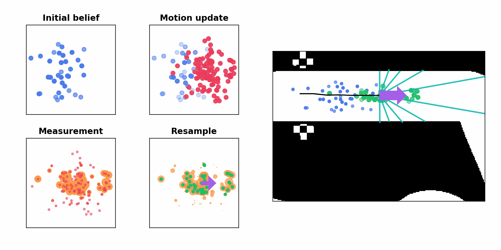
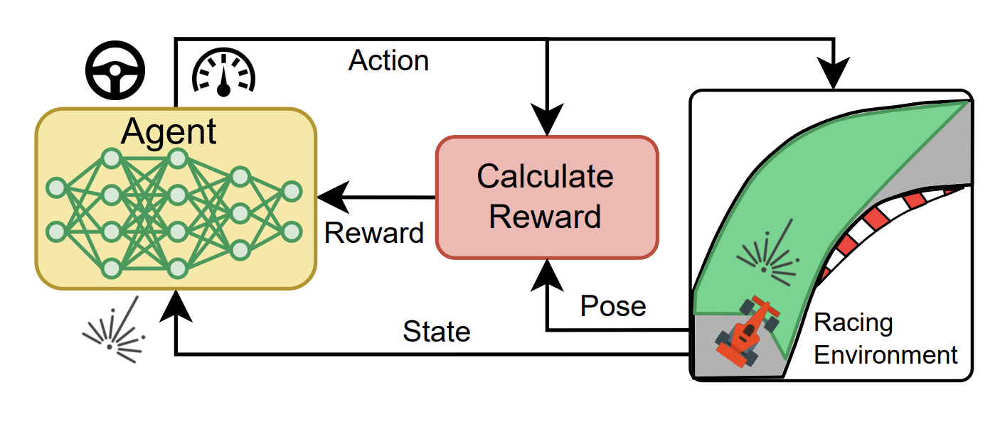

Projects I have worked on at various points in my life.
Coding Projects

Deep reinforcement learning algorithm implementations
Personal implementations of the DQN, PPO, DDPG, A2C, SAC and TD3 algorithms in PyTorch. The repo includes a document summarising the algorithms and code components.
In the future, I want to add JAX implemenations of these algorithms

Sensor fusion algorithms
Implemenations of the Linear Kalman Filter (LKF), Extended Kalman Filter (EKF), Unscented Kalman Filter (UKF) and Particle Filter (PF)

Tutorial for end-to-end reinforcement learning for autonomous racing
A tutorial style example of how to use end-to-end reinforcement learning (TD3 and SAC algorithms) for F1Tenth autonomous racing.